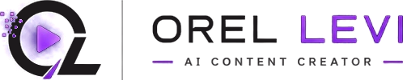

הצעת הפקה · סרטון פוטנציאל לנכס
הצעת הפקה · סרטון פוטנציאל לנכססרטון AI של עד דקה, ברוחב מלא (16:9) למצגת של אריק פרחי. הסרטון מראה מה המקום יכול להיות: מהמוסך של היום ועד הבניין, השכונה והשימושים שהשטח מאפשר, עם תסריט, קריינות והדמיות ברמה של פרסומת.
מי שרואה רק חניה, יראה בניין.
מי שרואה רק מוסך, יראה שכונה.
הסרטון נבנה מהתמונות האמיתיות של השטח, ומציג כמה תרחישים לפיתוח המקום. כלי אחד ברור שאפשר להקרין בכל פגישה ובכל דיון, ושמדבר בשפה שכולם מבינים: תמונה.
מתוך סרטון נדל"ן שהפקתי: אותו מקום, לפני ואחרי, כולו ב-AI. בסרטון של אריק זה ייראה ברוחב מלא, עם קריינות ועם כמה תרחישים.
בהצעה: מחקר, קונספט, תסריט, הדמיות AI, קריינות, מוזיקה ועריכה.
הסרטון נבנה מהשטח האמיתי. ככל שהחומרים מאריק מלאים יותר, ההדמיות מדויקות יותר.